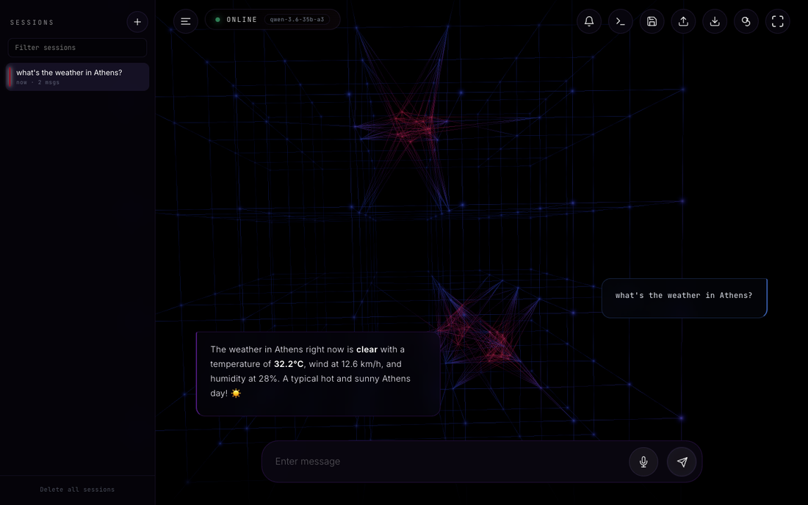
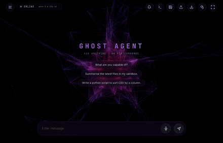
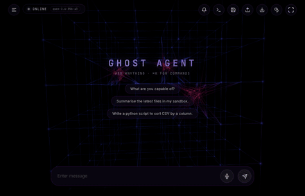

Interfaces
The agent itself has no user interface — it's an HTTP service. Everything below is a separate program that talks to it, and you can run as many or as few as you like.
Pick one
| Interface | Best for | Runs as |
|---|---|---|
| Web UI | Day-to-day use. The most complete one. | A separate process on port 8080 |
| Slack | Reaching it from your phone without setting up anything else. | A separate process |
| Voice | Hands-free. Speak, hear the answer. | Built into the web UI |
| Desktop client | A dedicated always-on screen. | A separate app |
| CLI | Scripting, quick one-off questions. | A command |
| HTTP API | Building something of your own. | The agent itself |
Web UI
The main way to use Ghost. A chat interface with the things a local agent needs: file upload, generated-file download, a live view of the agent's log while it works, memory correction controls, and a project view.

python interface/server.py
Then open http://localhost:8080. It's a separate process from the agent, so you can restart either without losing the other — and if the page loads but nothing responds, that tells you the agent is down rather than the UI.
The background is a status display
The moving graph behind the chat isn't decoration — it's driven by what the agent is actually doing. At rest it drifts slowly and stays cold. When you send something, the camera dives into the graph and it runs hot until the work finishes, then pulls back out.
Both clips below are one real turn — asking about the weather, which sends the agent out through Tor to fetch it. Watch the status line at the bottom left: it names the step as it happens.


There are ten forms in total. Four are organic — abyssal, horizon, cortex, vortex — and five borrow the machine's own internals as anatomy: lattice (a weight tensor), stack (transformer layers with a residual column running through them), embedding (concept clusters, with a query comet igniting the one it recalls), descent (a loss landscape with an optimizer bead rolling downhill), and cube. The tenth, empty, turns it off.
The button in the header cycles them and your choice sticks. The colour scheme is deliberately two-pole — deep blue for cold analysis, dark red for hot intent — so the only thing your eye has to track is temperature. If you have reduced motion enabled in your OS, the dive is capped to a slight lean.
The live log panel
The most useful and least obvious feature. It streams the agent's own log next to the conversation, so when a turn takes forty seconds you can see which tool it's sitting in rather than watching a spinner. If you're ever unsure whether Ghost is working or stuck, look here first.
On a phone
The UI installs as a home-screen app. That needs HTTPS with a certificate the phone will trust, which in practice means putting it behind a tailnet with a real certificate rather than a self-signed one. Once installed, a turn that was in flight when you closed the app resumes when you reopen it rather than being lost.
Slack
A bot that connects out to Slack, so it works from anywhere without exposing a port to the internet.
python interface/externals/slack_bot/main.py
GHOST_SLACK_OPEN_CHANNEL, default on) — that grant was added deliberately to bring real traffic into the outcome ledgers, and it is scoped to channels you put the bot in. Set GHOST_SLACK_OPEN_CHANNEL=0 to restore the strict single-user lock. This matters because the bot can run code on your machine, and a shared Slack channel is not an access-control boundary.
Shadow banning
Set GHOST_SLACK_SHADOW_BAN to a comma-separated list of Slack user IDs. Their messages, mentions and reactions are dropped as if the bot never saw them — no reply, no error, nothing that distinguishes being banned from the bot simply being idle.
GHOST_SLACK_SHADOW_BAN=U0123ABCD,U0456EFGH
Add it to interface/externals/slack_bot/.env and restart the bot. The list is read once at startup, so a ban costs a restart; attempts are logged at DEBUG only, so they stay out of the live stream.
Reactions are covered on purpose. A 👍/👎 on a bot reply writes a human outcome label that feeds the agent's learning, so a ban that covered only messages would leave a banned user able to poison that signal while appearing ignored.
The owner is exempt unconditionally — a mistyped ID in that variable cannot lock you out of your own bot. To find someone's ID: their Slack profile → ⋮ → Copy member ID.
A healthy Slack bot is quiet. Its error log staying empty is the signal that it's fine; check the info log for its heartbeat if you want positive confirmation it's alive.
Voice
Built into the web UI rather than a separate service. Speech-to-text runs on a worker node over your tailnet; text-to-speech is the local say command on macOS.
Both halves are local or tailnet-only, which matters: no cloud speech service means no account, no API key, and your voice never leaves your own network. That constraint is why it's built this way rather than using a hosted transcription API.
Desktop client
A standalone app that renders the same interface in a native window, built for a dedicated always-on device. It keeps a local chat log and remembers which face it was last showing.
Lives in interface/externals/clockwork_ghost/ with its own deploy script.
CLI
A small command for asking a question from a terminal or a shell script.
interface/externals/cli/ghost "what's the disk usage on the server?"
Useful in a pipeline, or when you want an answer without leaving the terminal.
The HTTP API
Everything above is a client of this. The API is Ollama-compatible, so tools that already speak Ollama can point at Ghost with no changes.
| Endpoint | What it's for |
|---|---|
POST /api/chat | Send a message. Streaming or not. |
POST /v1/chat/completions | The OpenAI-shaped equivalent, for OpenAI-compatible clients. |
GET /api/health | Is it alive, and is it healthy? See Install and run it. |
GET /api/sessions | List, read and delete stored conversations. |
POST /api/upload · GET /api/download/… | Move files in and out of the sandbox. |
POST /api/memory/correct | Fix something Ghost has stored wrong. |
POST /api/turn/cancel | Stop a turn that's in progress. |
GET /api/notifications/pending | Anything the agent needs you for. |
Every one of these needs the X-Ghost-Key header unless you're on localhost with no key configured. The full route list is in the API reference.
Image generation
Not an interface — a companion service. If you have a machine with a GPU, run the image-generation server on it and point Ghost at it with --image-gen-nodes. Without one configured, the image tool simply doesn't appear in Ghost's toolbox, and it won't offer to make pictures it can't make.